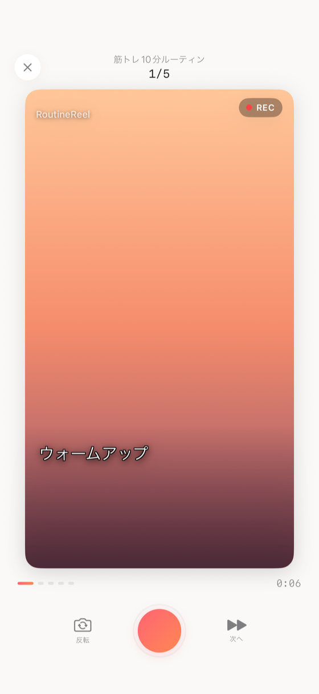

v1.0 軽い見た目寄せ版。録画ロジック非接触で REC / Step progress / カウントダウン / テロップ位置 / ボタン名を統一。

Views/Shooting/ShootingView.swift中央 → 画面下部 1/4 左下セーフゾーンへ移動。被写体回避 + TikTok/Reels UI（右下のいいね・コメント・シェア）との衝突回避。
.padding(.bottom, SceneLabelLayout.bottomPadding(cardHeight:))renderHeight * 22%・左下配置・フォント係数 0.034 で WYSIWYG 完全一致v1.0変更前: 右下に時刻 + 左下にステップ名の並列配置 → 右下UI衝突懸念 → 左下に統合（時刻が上、ステップ名が下）
撮影プレビュー（ShootingView / SingleStepShootingView）と完成動画（VideoCompositionService）の本編テロップを、配置比率・サイズ比率・行折り返し挙動・descent slack 補正まで含めて単一の SceneLabelLayout enum に集約。プレビューと書き出しの WYSIWYG を達成。
Views/Common/SceneLabelLayout.swiftleadingPadding / bottomPadding / maxWidth / lineSpacinglayerOriginX / layerOriginY(fontSize:) / layerTextWidth / layerLineSpacingcardHeight * 7%（プレビューと動画でズレ）SceneLabelLayout.bottomPadding(cardHeight:) = cardHeight * 22%renderHeight * 22%）と一致 → WYSIWYG 達成.lineLimit(SceneLabelLayout.maxLines) + .truncationMode(.tail)isWrapped = true + truncationMode = .end + frame.height = singleLineHeight × actualLineCountactualStepNameLineCount(text:renderSize:fontName:) で NSAttributedString.boundingRect により実行数測定（最大 maxLines にクランプ）fontSize * 0.23 浮くlayerOriginY(fontSize:) は base - fontSize * descentSlackFactor で下方向に補正撮影フローには ShootingView（シーケンス撮影）と SingleStepShootingView（単発撮影）の 2 系統が残存している。レイアウト面は SceneLabelLayout 集約で揃ったが、撮影ロジック本体の統合は別タスクで実施予定。
ShootingView との見た目統一。録画ロジックは変更なし。
Color.black → Color.designsBackground（warm white 系）designsSecondaryText、背景 designsCard + designsSoftShadowdesignsSecondaryText / designsPrimaryTextdesignsPulse(0.7→1.15, 2.0秒)designsPulse(0.88→1.0, 2.0秒)designsDivider opacity 0.7 / lineWidth 2designsAccentPink → designsAccentOrange）+ shadow pink 0.25 / radius 8 / y 3| 状態 | テキスト | フォント |
|---|---|---|
| 録画中 | 「0:XX」（残り秒数タイマー） | 14pt light monospaced |
| カウントダウン中 | 「まもなく録画」 | 14pt light |
| 保存中 | 「クリップを保存中」 | 14pt light |
| 待機中 | 「X秒録画」 | 14pt light |
トリムハンドルの VoiceOver サポートを追加。
プレビュー書き出し画面（ClipPlayerView / プレビュービュー）への VoiceOver 対応を追加。
.accessibilityLabel("ミュート") / .accessibilityLabel("ミュート解除") を付与（状態に応じて切替）.accessibilityAddTraits(.isButton) を付与し、VoiceOver でボタンとして正しく認識されるプレビュー書き出し画面のエラー状態に Recovery 種別を導入し、エラー内容に応じた回復経路を提示する。
| Recovery種別 | 表示ボタン | 説明 |
|---|---|---|
recompose | 「再合成する」 | 合成自体が失敗した場合。クリップ選択からやり直す |
retrySave | 「保存をやり直す」 | 合成は成功したが保存のみ失敗した場合。再合成せず保存のみ再試行 |
openSettings | 「設定を開く」 | 写真ライブラリの権限が拒否されている場合。iOS 設定アプリを開く |
| 状態 | 位置 | Before | After |
|---|---|---|---|
| ready | 左 | flip | 反転（カメラ反転） |
| ready | 右 | skip | 次へ（このステップを撮らずに次へ） |
| recording/countdown | 中央 | next step (forward.fill) | 完了 →（checkmark） |
理由: 「skip」「next step」は「飛ばす」誤解を生む。撮影中の主操作は「このステップを終えて次へ」の肯定形が正しい。
v1.0 で完全削除。撮影時の BGM 試聴・合成時の BGM 焼き込みは廃止。詳細は BGM機能削除の意思決定記録 参照。
従来は「撮り直し」ボタンと排他表示され、1本撮影後は反転できなかった。トップバー右に常設することで、.ready 状態の間はいつでも反転可能になった。
HStack trailing）.ready 状態のみ（録画中・カウントダウン中は非表示）skipCountdown）。カウントダウン待ちのストレスを排除単発撮影（SingleStepShootingView）に、連続撮影（ShootingView）が v1.1.0 で実装済みだった2機能を横展開し、操作方法を統一した。
skipCountdown() が呼ばれ即座に録画開始（ShootingView と同仕様）機能パリティ確認: これにより連続撮影と単発撮影でカメラ反転・カウントダウンスキップの操作が統一された。単発撮影はクリップライブラリの各ステップ行「撮影/再撮影」ボタン、またはClipGenerateViewの空ステップ「撮影する」から起動する。
録画失敗時に従来は無言で .ready に復帰していたが、「録画エラー」アラートを表示するよう変更。
CameraManager の録画失敗コールバック単発ステップ撮影（SingleStepShootingView）に追加されたエラーハンドリング。
v1.1.0 以前は連続撮影を中断した際、録画済みのクリップもすべて破棄されていた。v1.1.0 でクリップ保持に変更し、中断コストを大幅に軽減した。
isCancelled フラグで録画中ステップのみ識別して破棄対象にする固定サイズフォントが多いため、アクセシビリティ設定で過大なサイズを選択した場合のレイアウト崩れを防止するクランプを設定した。
.dynamicTypeSize(.xSmall ... .accessibility2).headline / .body 等）へ段階的に移行してクランプを外す方向| バージョン | 日付 | 変更内容 |
|---|---|---|
| v1.5 | 2026-07-03 | SingleStepShootingView に機能パリティを実装（4471820）: カメラ反転ボタンをトップバー右に追加（撮影前のみ表示・従来この画面には反転機能自体が存在しなかった）。カウントダウン中に録画ボタンをタップすると skipCountdown() で即録画開始（従来はカウントダウン中に録画ボタンが完全に無効化されていた）。これにより連続撮影（ShootingView）と単発撮影（SingleStepShootingView）でカメラ反転・カウントダウンスキップの操作が統一された |
| v1.4 | 2026-07-03 | v1.1.0 UI/UX改善バッチ反映: カメラ反転ボタンをトップバー右に常設（.ready 状態のみ表示、下部コントロールからの排他表示を廃止）。カウントダウン秒数を2本目以降は1秒に短縮、カウントダウン中の録画ボタンタップで即録画開始（skipCountdown）。録画失敗時に「録画エラー」アラートを表示（旧: 無言 ready 復帰）。SingleStepShootingView: 保存失敗時アラート「クリップを保存できませんでした。空き容量を確認してください。」追加、録画中クローズで中断確認アラート（「録画中の映像は保存されません。」）追加。ClipPlayerView/プレビュー: エラーリカバリ種別（recompose / retrySave / openSettings）を導入、ミュートToggle に VoiceOver ラベル付与、動画タップに isButton トレイト付与 |
| v1.3 | 2026-06-30 | v1.1.0 反映 (#1/#5): 連続撮影の中断→クリップ保持に変更（録画済みクリップをクリップライブラリに保持、録画中ステップのみ isCancelled フラグで破棄、「保存して終了」アラート追加）。Dynamic Type クランプを RootView に追加（.dynamicTypeSize(.xSmall ... .accessibility2)）。v1.2 でセマンティックフォント対応予定 |
| v1.2 | 2026-06-16 | SingleStepShootingView を ShootingView 寄り UI に統一（P1・596896d）: 背景を designsBackground に変更、録画ボタンをピンク→オレンジのグラデーション化、REC インジケーターにパルスアニメーション追加、カウントダウンを 128pt spring トランジションに統一、ステータステキストを3状態化（録画中タイマー / 「まもなく録画」/ 「X秒録画」）。ExportCompleteView: 自動ハッシュタグコピー廃止・明示コピーボタン追加・完了ボタンのインタースティシャル広告削除。ClipPlayerView: トリムハンドルに accessibilityAdjustableAction（0.5秒刻み）と accessibilityValue（「X.X秒」）を追加 |
| v1.1 | 2026-06-12 | Analytics イベント組込み: first_recording（初回 1 回のみ、AppSettings.hasRecordedFirst で永続化判定）と streak_updated(days:)（撮影都度、最新 streak 値を送信）を ShootingViewModel.persistClip 成功時に発火（commit 8d0d70b・1d6e91e で日付二重加算を解消） |
| v1.0.5 | 2026-06-10 | SceneLabelLayout 単一ソース化（配置・サイズ比率・descent slack 補正を集約）/ 撮影プレビュー位置を 7%→22% に統一して完成動画と WYSIWYG 達成 / 長文ステップ名の折り返しを SwiftUI Text / CATextLayer 両方で maxLines=2 に統一 / SingleStepShootingView に底面グラデーションと #Preview を追加（commit 35c6118・a7f8ee2） |
| v1.0.4 | 2026-05-21 | テロップ時刻を右下→左下ステップ名の上に統合（TikTok/Reels UI衝突回避）/ タイムスタンプデフォルトをOFFに変更 |
| v1.0.3 | 2026-05-21 | BGM機能削除に伴う関連UIなし（既に試聴UI未実装） |
| v1.0.2 | 2026-05-21 | ボタン名統一（skip→次へ、next step→完了 →、flip→反転）/ テロップ位置を中央→画面下部1/4セーフゾーンへ |
| v1.0.1 | 2026-05-20 | REC呼吸 / Step progress 波紋 / カウントダウン 128pt rounded（Designs 軽い寄せ） |
| v1.0 | 初版 | シーケンス撮影フロー実装 |